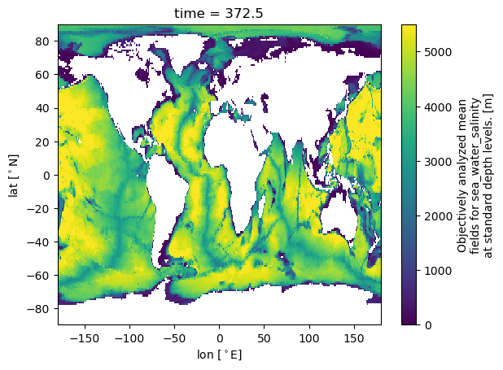
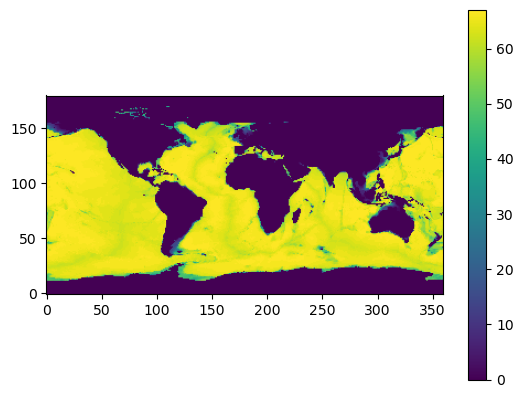

This notebook uses WOA data to generate a hycom1 vertical coordinate spec for CESM3#
Author: Ian Grooms
import matplotlib.pyplot as plt
import matplotlib as mpl
import numpy as np
import xarray as xr
import scipy
from netCDF4 import Dataset
import time
from collections import OrderedDict
Preliminaries#
Set the reference pressure to 2000 dbar
p_ref = 2000
def dens_wright_full(T, S, z):
"""
Equation of state for sea water given by Wright, 1997, J. Atmos. Ocean. Tech., 14, 735-740.
Units: T[degC],S[PSU],z[m] (was p[Pa])
Returns density [kg m-3]
"""
p = 9.8 * 1020.41 * z
a0 = 7.133718e-4; a1 = 2.72467e-7; a2 = -1.646582e-7
b0 = 5.61377e8; b1 = 3.600337e6; b2 = -3.727194e4; b3 = 1.660557e2; b4 = 6.844158e5; b5 = -8.389457e3
c0 = 1.609893e5; c1 = 8.427815e2; c2 = -6.931554; c3 = 3.869318e-2; c4 = -1.664201e2; c5 = -2.765195
al0 = a0 + a1 * T + a2 * S
p0 = b0 + b4 * S + T * (b1 + T * (b2 + b3 * T) + b5 * S)
l = c0 + c4 * S + T * (c1 + T * (c2 + c3 * T) + c5 * S)
dens = (p + p0) / (l + al0*(p+p0))
if isinstance(T, xr.DataArray):
return dens.assign_attrs(units=r"kg m$^{-3}$", standard_name="Density-like")
return dens
Load WOA data
Re = 6370e3 # [m]
deg2rad = np.pi / 180
ds = xr.open_dataset('/glade/campaign/cgd/oce/datasets/obs/woa18/woa18_decav_merged_monthly_deep_01.nc')
ds['depth'] = ds.depth.assign_attrs(units='m')
ds['lat'] = ds.lat.assign_attrs(units=r'$^\circ$N')
ds['lon'] = ds.lon.assign_attrs(units=r'$^\circ$E')
ds['lateral'] = ( 0 * ds.lat * ds.lon ).where( ds.s_an.isel(depth=0) >= 0 ) # Convenience for broadcasting
ds['area'] = ( Re**2 * deg2rad * ( np.sin( deg2rad * ( ds.lat + 0.5 ) ) - np.sin( deg2rad * ( ds.lat - 0.5 ) ) ) + ds.lateral ).assign_attrs(units='m2',standard_name="Area")
ds['topo'] = ( ds.depth + 0 * ds.s_an ).max(dim='depth').assign_attrs(units='m',standard_name="Bathymetry")
ds.topo.isel(time=0).plot()
print('Deepest point [m] =', ds.topo.max().data)
Deepest point [m] = 5500.0

Define basin masks. Code in the cell below was obtained originally from Alistair Adcroft, then modified.
def genBasinMasks(depth, contiguous=False, verbose=True, xda=True):
"""
Returns masking for different regions.
Parameters
----------
x : 2D array
Longitude
y : 2D array
Latitude
depth : 2D array
Ocean depth. Masked values must be set to zero.
verbose : boolean, optional
If True, print some stuff. Default is false.
xda : boolean, optional
If True, returns an xarray Dataset. Default is false.
Returns
-------
"""
rmask_od = OrderedDict()
rmask_od['Global'] = xr.where(depth > 0, 1.0, 0.0)
x = depth.lon.values
y = depth.lat.values
x, y = np.meshgrid(x, y)
# y, x = np.meshgrid(y, x)
depth = np.nan_to_num(depth.values)
if verbose: print('Generating global wet mask...')
if contiguous:
wet = ice9(x, y, depth, (0,-35)) # All ocean points seeded from South Atlantic
else:
wet = 0 * depth
wet[depth>0] = 1
if verbose: print('done.')
code = 0*wet
if verbose: print('Finding Cape of Good Hope ...')
tmp = 1 - wet; tmp[x<-30] = 0
tmp = ice9(x, y, tmp, (20,-30.))
yCGH = (tmp*y).min()
if verbose: print('done.', yCGH)
if verbose: print('Finding Melbourne ...')
if x.min()<-180:
tmp = 1 - wet; tmp[x>-180] = 0
tmp = ice9(x, y, tmp, (-220,-25.))
else:
tmp = 1 - wet
tmp = ice9(x, y, tmp, (360-220,-25.))
yMel = (tmp*y).min()
if verbose: print('done.', yMel)
if verbose: print('Processing Persian Gulf ...')
tmp = wet*( 1-southOf(x, y, (55.,23.), (56.5,27.)) )
tmp = ice9(x, y, tmp, (53.,25.))
code[tmp>0] = 11
rmask_od['PersianGulf'] = xr.where(code == 11, 1.0, 0.0)
wet = wet - tmp # Removed named points
if verbose: print('Processing Red Sea ...')
tmp = wet*( 1-southOf(x, y, (40.,11.), (45.,13.)) )
tmp = ice9(x, y, tmp, (40.,18.))
code[tmp>0] = 10
rmask_od['RedSea'] = xr.where(code == 10, 1.0, 0.0)
wet = wet - tmp # Removed named points
if verbose: print('Processing Black Sea ...')
tmp = wet*( 1-southOf(x, y, (26.,42.), (32.,40.)) )
tmp = ice9(x, y, tmp, (32.,43.))
code[tmp>0] = 7
rmask_od['BlackSea'] = xr.where(code == 7, 1.0, 0.0)
wet = wet - tmp # Removed named points
if verbose: print('Processing Mediterranean ...')
tmp = wet*( southOf(x, y, (-5.7,35.5), (-5.7,36.5)) )
tmp = ice9(x, y, tmp, (4.,38.))
code[tmp>0] = 6
rmask_od['MedSea'] = xr.where(code == 6, 1.0, 0.0)
wet = wet - tmp # Removed named points
if verbose: print('Processing Baltic ...')
tmp = wet*( southOf(x, y, (14,54.), (14,63.)) )# wet*( southOf(x, y, (8.6,56.), (8.6,60.)) )
tmp = ice9(x, y, tmp, (20.,56.)) # ice9(x, y, tmp, (10.,58.))
code[tmp>0] = 9
rmask_od['BalticSea'] = xr.where(code == 9, 1.0, 0.0)
wet = wet - tmp # Removed named points
if verbose: print('Processing Hudson Bay ...')
tmp = wet*(
( 1-(1-southOf(x, y, (-95.,66.), (-83.5,67.5)))
*(1-southOf(x, y, (-83.5,67.5), (-84.,71.)))
)*( 1-southOf(x, y, (-70.,58.), (-70.,65.)) ) )
tmp = ice9(x, y, tmp, (-85.,60.))
code[tmp>0] = 8
rmask_od['HudsonBay'] = xr.where(code == 8, 1.0, 0.0)
wet = wet - tmp # Removed named points
if verbose: print('Processing Arctic ...')
tmp = wet*(
(1-southOf(x, y, (-171.,66.), (-166.,65.5))) * (1-southOf(x, y, (-64.,66.4), (-50.,68.5))) # Lab Sea
+ southOf(x, y, (-50.,0.), (-50.,90.)) * (1- southOf(x, y, (0.,65.5), (360.,65.5)) ) # Denmark Strait
+ southOf(x, y, (-18.,0.), (-18.,65.)) * (1- southOf(x, y, (0.,64.9), (360.,64.9)) ) # Iceland-Sweden
+ southOf(x, y, (20.,0.), (20.,90.)) # Barents Sea
+ (1-southOf(x, y, (-280.,55.), (-200.,65.)))
)
tmp = ice9(x, y, tmp, (0.,85.))
code[tmp>0] = 4
rmask_od['Arctic'] = xr.where(code == 4, 1.0, 0.0)
wet = wet - tmp # Removed named points
if verbose: print('Processing Atlantic ...')
tmp = wet*(1-southOf(x, y, (0.,yCGH), (360.,yCGH)))
tmp = ice9(x, y, tmp, (-20.,0.))
code[tmp>0] = 2
rmask_od['AtlanticOcean'] = xr.where(code == 2, 1.0, 0.0)
wet = wet - tmp # Removed named points
if verbose: print('Processing Pacific ...')
tmp = wet*( (1-southOf(x, y, (0.,yMel), (360.,yMel)))
-southOf(x, y, (360-257,1), (360-257,0))*southOf(x, y, (0,3), (1,3))*southOf(x, y, (0,0), (0,1))
-southOf(x, y, (360-254.25,1), (360-254.25,0))*southOf(x, y, (0,-5), (1,-5))*southOf(x, y, (0,0), (0,1))
-southOf(x, y, (360-243.7,1), (360-243.7,0))*southOf(x, y, (0,-8.4), (1,-8.4))*southOf(x, y, (0,0), (0,1))
-southOf(x, y, (360-234.5,1), (360-234.5,0))*southOf(x, y, (0,-8.9), (1,-8.9))*southOf(x, y, (0,0), (0,1))
)
tmp = ice9(x, y, tmp, (150.,0.)) # ice9(x, y, tmp, (-150.,0.))
code[tmp>0] = 3
rmask_od['PacificOcean'] = xr.where(code == 3, 1.0, 0.0)
wet = wet - tmp # Removed named points
if verbose: print('Processing Indian ...')
tmp = wet*(1-southOf(x, y, (0.,yCGH), (360.,yCGH)))
tmp = ice9(x, y, tmp, (55.,0.))
code[tmp>0] = 5
rmask_od['IndianOcean'] = xr.where(code == 5, 1.0, 0.0)
wet = wet - tmp # Removed named points
if verbose: print('Processing Southern Ocean ...')
tmp = ice9(x, y, wet, (0.,-55.))
code[tmp>0] = 1
rmask_od['SouthernOcean'] = xr.where(code == 1, 1.0, 0.0)
wet = wet - tmp # Removed named points
#if verbose: print('Remapping Persian Gulf points to the Indian Ocean for OMIP/CMIP6 ...')
#code[code==11] = 5
# code[wet>0] = -9
# (j,i) = np.unravel_index( wet.argmax(), x.shape)
# if j:
# if verbose: print('There are leftover points unassigned to a basin code')
# while j:
# print(x[j,i],y[j,i],[j,i])
# wet[j,i]=0
# (j,i) = np.unravel_index( wet.argmax(), x.shape)
# else:
# if verbose: print('All points assigned a basin code')
################### IMPORTANT ############################
# points from following regions are not "removed" from wet
code1 = code.copy()
wet = ice9(x, y, depth, (0,-35)) # All ocean points seeded from South Atlantic
if verbose: print('Processing Labrador Sea ...')
tmp = wet*((southOf(x, y, (-65.,66.), (-45,66.)))
*(southOf(x, y, (-65.,52.), (-65.,66.)))
*(1-southOf(x, y, (-45.,52.), (-45,66.)))
*(1-southOf(x, y, (-65.,52.), (-45,52.))))
tmp = ice9(x, y, tmp, (-50.,55.))
code1[tmp>0] = 12
rmask_od['LabSea'] = xr.where(code1 == 12, 1.0, 0.0)
wet1 = ice9(x, y, depth, (0,-35)) # All ocean points seeded from South Atlantic
if verbose: print('Processing Baffin Bay ...')
tmp = wet1*((southOf(x, y, (-94.,80.), (-50.,80.)))
*(southOf(x, y, (-94.,66.), (-94.,80.)))
*(1-southOf(x, y, (-94.,66.), (-50,66.)))
*(1-southOf(x, y, (-50.,66.), (-50.,80.))))
tmp = ice9(x, y, tmp, (-70.,73.))
code1[tmp>0] = 13
# remove Hudson Bay
code1[rmask_od['HudsonBay']>0] = 0.
rmask_od['BaffinBay'] = xr.where(code1 == 13, 1.0, 0.0)
wet1 = ice9(x, y, depth, (0,-35)) # All ocean points seeded from South Atlantic
if verbose: print('Processing Gulf of Mexico ...')
tmp = wet*( (1-southOf(x, y, (360.-98.,18.), (360.-78.,18.)))
*southOf(x, y, (360.-98.,32.), (360.-78.,32.))
*(1-southOf(x, y, (-78.,0.), (-78.,1.)))
# -southOf(x, y, (360-254.25,1), (360-254.25,0))*southOf(x, y, (0,-5), (1,-5))*southOf(x, y, (0,0), (0,1))
# -southOf(x, y, (360-243.7,1), (360-243.7,0))*southOf(x, y, (0,-8.4), (1,-8.4))*southOf(x, y, (0,0), (0,1))
# -southOf(x, y, (360-234.5,1), (360-234.5,0))*southOf(x, y, (0,-8.9), (1,-8.9))*southOf(x, y, (0,0), (0,1))
)
tmp = ice9(x, y, tmp, (-90.,25.))
code1[tmp>0] = 14
rmask_od['GoM'] = xr.where(code1 == 14, 1.0, 0.0)
if verbose: print('Processing Caspian ...')
tmp = xr.where(depth > 0, 1.0, 0.0)
tmp = ice9(x, y, tmp, (51., 39.))
code[tmp>0] = 15
rmask_od['CaspianSea'] = xr.where(code == 15, 1.0, 0.0)
with Dataset("mapmsk_Celebes.nc", "r", format="NETCDF4") as rootgrp:
tmp = np.array(rootgrp["Celebes"][:])
code[tmp>0] = 16
rmask_od['Celebes'] = xr.where(code == 16, 1.0, 0.0)
with Dataset("mapmsk_Japan.nc", "r", format="NETCDF4") as rootgrp:
tmp = np.array(rootgrp["Japan"][:])
code[tmp>0] = 17
rmask_od['Japan'] = xr.where(code == 17, 1.0, 0.0)
with Dataset("mapmsk_Sulu.nc", "r", format="NETCDF4") as rootgrp:
tmp = np.array(rootgrp["Sulu"][:])
code[tmp>0] = 18
rmask_od['Sulu'] = xr.where(code == 18, 1.0, 0.0)
wet1 = ice9(x, y, depth, (0,-35)) # All ocean points seeded from South Atlantic
if verbose: print('Processing CARIB12 ...')
tmp = wet*( (1-southOf(x, y, (360.-98.5,-6.), (360.-35.5,-6.)))
*southOf(x, y, (360.-98.5,32.), (360.-35.5,32.))
*(1-southOf(x, y, (-35.5,0.), (-35.5,1.)))
)
tmp = ice9(x, y, tmp, (-90.,25.))
code1[tmp>0] = 19
rmask_od['CARIB12'] = xr.where(code1 == 19, 1.0, 0.0)
if verbose:
print("""
Basin codes:
-----------------------------------------------------------
(0) Global (9) Pacific Ocean
(1) Persian Gulf (10) Indian Ocean
(2) Red Sea (11) Southern Ocean
(3) Black Sea (12) Labrador Sea
(4) Mediterranean (11) Persian Gulf
(5) Baltic (13) Baffin Bay
(6) Hudson Bay (14) Gulf of Mexico
(7) Arctic & GIN Seas (15) Caspian Sea
(8) Atlantic (16) Celebes Sea
(17) Japan/East Sea (18) Sulu Sea
(19) CARIB12
Important: basin codes overlap. Code 12 and higher are only loaded if xda=True.
""")
rmask = xr.DataArray(np.zeros((len(rmask_od), depth.shape[0], depth.shape[1])),
dims=('region', 'yh', 'xh'),
coords={'region':list(rmask_od.keys())})
for i, rmask_field in enumerate(rmask_od.values()):
rmask.values[i,:,:] = rmask_field
if xda:
return rmask
else:
return code
def ice9it(i, j, depth, minD=0.):
"""
Recursive implementation of "ice 9".
Returns 1 where depth>minD and is connected to depth[j,i], 0 otherwise.
"""
wetMask = 0*depth
(nj,ni) = wetMask.shape
stack = set()
stack.add( (j,i) )
while stack:
(j,i) = stack.pop()
if wetMask[j,i] or depth[j,i] <= minD: continue
wetMask[j,i] = 1
if i>0: stack.add( (j,i-1) )
else: stack.add( (j,ni-1) ) # Periodic beyond i=0
if i<ni-1: stack.add( (j,i+1) )
else: stack.add( (j,0) ) # Periodic beyond i=ni-1
if j>0: stack.add((j-1,i))
if j<nj-1: stack.add( (j+1,i) )
else: stack.add( (j,ni-1-i) ) # Tri-polar fold beyond j=nj-1
return wetMask
def nearestJI(x, y, x0, y0):
"""
Find (j,i) of cell with center nearest to (x0,y0).
"""
return np.unravel_index( ((x-x0)**2 + (y-y0)**2).argmin() , x.shape)
def ice9(x, y, depth, xy0):
ji = nearestJI(x, y, xy0[0], xy0[1])
return ice9it(ji[1], ji[0], depth)
def southOf(x, y, xy0, xy1):
"""
Returns 1 for point south/east of the line that passes through xy0-xy1, 0 otherwise.
"""
x0 = xy0[0]; y0 = xy0[1]; x1 = xy1[0]; y1 = xy1[1]
dx = x1 - x0; dy = y1 - y0
Y = (x-x0)*dy - (y-y0)*dx
Y[Y>=0] = 1; Y[Y<=0] = 0
return Y
codes = genBasinMasks(ds.topo.isel(time=0))
Set min and max z-star levels#
The minimum z-star interface depths correspond to
Four 2.5 m thick layers
Two 3 m layers and one 4 m layer
Layers with thicknesses starting at 5 m and increasing gradually at first, then rapidly
max_depth = 6000 # I got this manually from the MOM6 geometry file
z_min_new = np.zeros(76)
z_min_new[:5] = 2.5*np.arange(5) # Must have 4x 2.5m layers
z_min_new[5] = 13
z_min_new[6] = 16
z_min_new[7] = 20
z_min_new[8:] = z_min_new[7] + 5*np.arange(1,69) + (max_depth - z_min_new[7] - 5*68)*(np.linspace(0,1,69)[1:]**9)
print(z_min_new[-4:]-z_min_new[-5:-1])
[494.39851794 558.48767521 629.80381033 709.03451811]
The cell below sets z_max, which is the max depth of an interface. Using this option helps to avoid having one thick layer at the bottom followed by a bunch of vanished layers (thicknesses equal to dz_min, which is 0.001 m). The cell below sets z_max so that the levels can’t be deeper than an equispaced z-star grid would be. In some regions you’ll get a sequence of 80 m layers at the bottom rather than one thick one and several vanished ones.
z_max_new = np.rint(np.linspace(0, max_depth, 76))
z_max_new[-1] = max_depth
Compute vertical grid-distribution functions at each horizontal location#
We are eventually going to compute grid-density functions for each column and then combine them. If we treated all the columns equally, then the shallow columns would try to fit 75 layers, which would tend to produce a shallow grid. To avoid this, when we combine the columns we will weight them using the depth. To be precise, we will weight the columns based on the maximum number of non-vanished layers that could fit into that column. So shallow columns will be down-weighted compared to deep columns. We will also ignore columns that are 20 m deep or shallower, since we will force the grid to be geopotential in those columns anyways.
The cell below also removes several regions: The Black Sea, the Baltic, Hudson Bay, the Arctic Ocean, Baffin Bay, and the Caspian Sea. We expect these regions to have geopotential coordinates anyways, so they shouldn’t be used to set the isopycnal targets.
num_skip = 8 # If the depth does not allow at least num_skip z_min interfaces, then skip that column
# num_skip=8 means at least 20 m depth
print(z_min_new[num_skip-1])
weights = np.zeros((180,360))
for i in range(180):
for j in range(360):
if ((z_min_new < ds.topo.data[0,i,j]).sum() <= num_skip):
weights[i,j] = 0
else:
weights[i,j] = (z_min_new < ds.topo.data[0,i,j]).sum() - num_skip
weights[codes[3].data.astype(bool)] = 0. # Black Sea
weights[codes[5].data.astype(bool)] = 0. # Baltic
weights[codes[6].data.astype(bool)] = 0. # Hudson Bay
weights[codes[7].data.astype(bool)] = 0. # Arctic
weights[codes[13].data.astype(bool)] = 0. # Baffin
weights[codes[15].data.astype(bool)] = 0. # Caspian
plt.imshow(weights)
plt.gca().invert_yaxis()
plt.colorbar()
20.0
<matplotlib.colorbar.Colorbar at 0x14d4fbac5090>

Get \(\rho_2\) on an equispaced 5 m grid#
The cells below interpolates WOA T and S to an equispaced 5 m grid and then evaluate \(\rho_2\) on that grid. (Note that although the variable name is sigma2 is actually \(\rho_2\), not \(\sigma_2 = \rho_2 - 1000\)). Interpolation uses a shape-preserving cubic spline. It is more accurate to interpolate T and S and then evaluate the EOS than to evaluate the EOS on the WOA grid and then interpolate to the equispaced grid. This is both slow and high-memory.
def remove_instabilities(s2):
S2 = np.array(s2)
if any(np.diff(s2) < 0.0):
for k in range(s2.shape[0]):
S2[k] = np.maximum(s2[k],np.nanmax(S2[:k+1]))
return S2
z_grid = np.linspace(0,5500,num=1101) # 5500 here is the WOA max depth
sigma2 = np.zeros((12,1101,180,360)) # 12 is the number of months in the WOA data set; 1101 is the size of z_grid; 180x360 is the size of the WOA horizontal grid
sigma2[:] = np.nan
for tt in range(12):
for jj in range(180):
for ii in range(360):
nan_indices = np.where(np.isnan(ds.theta0.data[tt,:,jj,ii]))[0]
if nan_indices.shape[0] > 0:
first_nan = nan_indices[0]
if first_nan > 1:
sigma2[tt,:,jj,ii] = dens_wright_full(scipy.interpolate.PchipInterpolator(ds.depth.data[:first_nan],ds.theta0.data[tt,:first_nan,jj,ii],extrapolate=False)(z_grid[:]),
scipy.interpolate.PchipInterpolator(ds.depth.data[:first_nan],ds.s_an.data[tt,:first_nan,jj,ii],extrapolate=False)(z_grid[:]), p_ref)
else:
sigma2[tt,:,jj,ii] = dens_wright_full(scipy.interpolate.PchipInterpolator(ds.depth.data[:],ds.theta0.data[tt,:,jj,ii],extrapolate=False)(z_grid[:]),
scipy.interpolate.PchipInterpolator(ds.depth.data[:],ds.s_an.data[tt,:,jj,ii],extrapolate=False)(z_grid[:]), p_ref)
sigma2[tt,:,jj,ii] = remove_instabilities(sigma2[tt,:,jj,ii])
The cell below evaluates the grid-distribution function
where \(h_k\) is 5 m. It then considers this to be a function of potential density, and interpolates the values to an equispaced grid in potential density, with spacing 0.01 between the floor and ceil.
We do not include values of density from depths shallower than 20 m to compute the per-column grid-distribution functions. The results should therefore not be used to compute target interface densities for interfaces 0 through 7.
If the grid-density function for a column wants to have a higher density of grid cells than is allowed by the z-star grid, then we limit the computed grid-density function to the value associated with the z-star grid.
# Find the range of potential density values that we will interpolate over
sigma2_floor = np.floor(np.nanmin(sigma2))
sigma2_ceil = np.ceil(np.nanmax(sigma2))
print(sigma2_floor,sigma2_ceil)
# dskip = 5 means that the first density difference is between 20 and 25 m.
# It should therefore be used to find all but the first 8 interfaces (i.e. use it to find targets [8:] in Python)
dskip = 5
nk = 76
sigma2_min = np.floor(np.nanmin(sigma2[:,dskip-1:,:,:]))
sigma2_max = np.ceil(np.nanmax(sigma2[:,dskip-1:,:,:]))
num_s2 = (1 + (sigma2_max-sigma2_min)*100).astype(int) # Might help to increase resolution here, but it would cost memory
s2_grid = np.linspace(sigma2_min, sigma2_max, num=num_s2)
S_interp = np.zeros((12, num_s2, 180, 360))
S_interp[:] = np.nan
S_lim = np.zeros(num_s2)
s_min = np.zeros((12,nk,180,360))
for tt in range(12):
Sk = np.array(sigma2[tt,:,:,:])
Sk[0:dskip+1,:,:] = 0.
ck = np.array(Sk)
for k in range(dskip+1,1100):
ck[k,:,:] = np.sqrt(np.maximum(0,(sigma2[tt,k,:,:]-sigma2[tt,k-1,:,:])))
Sk[k,:,:] = np.trapz(ck[:k+1,:,:],axis=0)
ck = None
nskip = 0
for jj in range(180):
for ii in range(360):
if(weights[jj,ii] > 0.):
d = 1100
if np.isnan(sigma2[tt,:,jj,ii]).any():
d = np.where(np.isnan(sigma2[tt,:,jj,ii]))[0][0] -1
if d > dskip:
try:
if (np.diff(sigma2[tt,dskip-1:d,jj,ii]) == 0).any():
ind_unique = dskip - 1 + np.unique(sigma2[tt,dskip-1:d,jj,ii], return_index=True)[1]
S_interp[tt,:,jj,ii] = scipy.interpolate.PchipInterpolator(sigma2[tt,ind_unique,jj,ii],
Sk[ind_unique,jj,ii]/np.nanmax(Sk[ind_unique,jj,ii]),extrapolate=False)(s2_grid)
else:
S_interp[tt,:,jj,ii] = scipy.interpolate.PchipInterpolator(sigma2[tt,dskip-1:d,jj,ii],
Sk[dskip-1:d,jj,ii]/np.nanmax(Sk[dskip-1:d,jj,ii]),extrapolate=False)(s2_grid)
if (S_interp[tt,:,jj,ii] >= 0 ).any():
S_interp[tt,0:np.where(S_interp[tt,:,jj,ii] >= 0 )[0][0],jj,ii] = 0
if np.where(S_interp[tt,:,jj,ii] <= 1)[0].shape[0] > 0:
S_interp[tt,(np.where(S_interp[tt,:,jj,ii] <= 1)[0][-1]+1):,jj,ii] = 1
except:
nskip += 1
# The line below applies depth weighting.
S_interp[tt,:,jj,ii] *= weights[jj,ii]
# The lines below apply limiting based on the z* grid.
nan_indices = np.where(np.isnan(ds.theta0.data[tt,:,jj,ii]))[0]
if nan_indices.shape[0] > 0:
first_nan = nan_indices[0]
if first_nan > 1:
s_min[tt,:,jj,ii] = dens_wright_full(scipy.interpolate.PchipInterpolator(ds.depth.data[:first_nan],ds.theta0.data[tt,:first_nan,jj,ii],extrapolate=False)(z_min_new[:]),
scipy.interpolate.PchipInterpolator(ds.depth.data[:first_nan],ds.s_an.data[tt,:first_nan,jj,ii],extrapolate=False)(z_min_new[:]), p_ref)
else:
s_min[tt,:,jj,ii] = dens_wright_full(scipy.interpolate.PchipInterpolator(ds.depth.data[:],ds.theta0.data[tt,:,jj,ii],extrapolate=False)(z_min_new[:]),
scipy.interpolate.PchipInterpolator(ds.depth.data[:],ds.s_an.data[tt,:,jj,ii],extrapolate=False)(z_min_new[:]), p_ref)
s_min[tt,:,jj,ii] = remove_instabilities(s_min[tt,:,jj,ii])
d = nk
if np.isnan(s_min[tt,:,jj,ii]).any():
d = np.where(np.isnan(s_min[tt,:,jj,ii]))[0][0] -1
if d > num_skip:
try:
S_lim = scipy.interpolate.PchipInterpolator(s_min[tt,dskip-1:d,jj,ii], np.linspace(0,1,d-dskip+1),extrapolate=False)(s2_grid)
if (S_lim >= 0).any():
S_lim[0:np.where(S_lim >= 0)[0][0]] = 0
if np.where(S_lim <= 1)[0].shape[0] > 0:
S_lim[(np.where(S_interp[tt,:,jj,ii] <= 1)[0][-1]+1):] = weights[jj,ii]
except:
S_lim = 1
S_interp[tt,:,jj,ii] = np.fmin(S_interp[tt,:,jj,ii],weights[jj,ii]*S_lim)
print(tt, nskip)
Sk = None
s_min = None
Compute a single global grid-distribution function#
Next we condense down to a single grid-distribution function \(S(\sigma)\) that goes from 0 to 1. First we compute the grid-density for each column. Then, for each potential density in our equispaced grid of potential densities, we compute the 99.5th percentile of grid-densities across all columns, and take the result to be the single global value of grid-density at that value of potential density. The resulting global grid-density function does not integrate to 1, so we normalize it so that it does. The result is the global grid-distribution function.
ps = np.zeros((12,num_s2 -1,180,360))
for jj in range(180):
for ii in range(360):
ps[:,:,jj,ii] = np.diff(S_interp[:,:,jj,ii],axis=1)/np.diff(s2_grid)[:]
S_interp = None
# 99.5th percentile over x, y, and t
p95_ps = np.nanquantile(ps[:,:,:,:], 0.995, axis=(0,2,3))
p95_ss = np.concatenate((np.array([0]),np.cumsum(p95_ps)))
p95_ss = p95_ss/np.max(p95_ss)
Compute target densities#
Next we find target potential densities by inverting \(S(\sigma)\) against a half-Chebyshev grid on 0,1. Since the data was taken below 20 m, and it takes 8 interfaces to get to 20 m deep, we should not set the first 8 interfaces using this data. The first 8 interfaces are simply set to be linear from the min density in the WOA data to the 9th interface density. The last interface density is set to the densest value in the WOA data, rounded up to the nearest integer. All values are then truncated to 10 bit precision.
def get_targets(x,y):
# Input x should be s2_grid.
# Input y is the grid distribution function evaluated at the s2 grid.
# Output is the rho_pot_2 targets.
ind_min = np.where(y == 0.)[0][-1]
ind_max = np.where(y == 1.)[0][0]
s2_targets = np.zeros(76)
r_grid = 1 - np.cos(np.linspace(0,np.pi/2,num=68))
s2_targets[8:-1] = np.interp(r_grid,y[ind_min:ind_max+1],x[ind_min:ind_max+1])[:-1]
s2_targets[:8] = sigma2_floor + (s2_targets[8]-sigma2_floor)*np.arange(0,8)/8
s2_targets[-1] = sigma2_ceil
s2_targets = np.rint(s2_targets*1024)/1024
assert(np.unique(s2_targets).shape[0] == s2_targets.shape[0])
return s2_targets
s2_targets_p95xy = get_targets(s2_grid, p95_ss)
Set max thicknesses#
At this point we want to set dz_max. The first four layers have 2.5 max thickness and then next three have max thicknesses 3, 3, and 4 m. This ensures that the top 20 m will be z-star. After that the max layer thicknesses are all 10 m down to a depth of 100 m. From 100 m down the max thicknesses increase in an ad hoc manner.
dz_max_new = np.zeros(75)
dz_max_new[:4] = 2.5
dz_max_new[4:7] = np.array([3, 3, 4])
dz_max_new[7:23] = 10
dz_max_new[23:] = np.ceil((15/100 + (1 - 15/100)*np.linspace(0, 1.3, num=dz_max_new[23:].shape[0]))*z_min_new[23:-1])
dz_max_new = np.minimum(600, dz_max_new)
dz_max_new = np.maximum(np.diff(z_min_new),dz_max_new)
Write the results to netCDF files#
with Dataset("hybrid_75layer_zstar_2.50m-2026-04-28.nc", "w", format="NETCDF4") as rootgrp:
rootgrp.author = 'Ian Grooms (ian.grooms@colorado.edu)'
rootgrp.history= "Created " + time.ctime(time.time()) + " with cesm3_0_ocn_vgrid.ipynb"
rootgrp.createDimension('layers', 75)
rootgrp.createDimension('interfaces', 76)
rootgrp.createVariable('sigma2','f8',('interfaces',),fill_value=np.nan)
rootgrp["sigma2"].units = "kg/m^3"
rootgrp["sigma2"].long_name = "Interface target potential density referenced to 2000db"
rootgrp["sigma2"][:] = s2_targets_p95xy[:]
rootgrp.createVariable('dz','f8',('layers',),fill_value=np.nan)
rootgrp["dz"].units = "m"
rootgrp["dz"].long_name = "z* coordinate level thicknesses"
rootgrp["dz"][:] = np.diff(z_min_new)
with Dataset("dz_max.nc", "r+", format="NETCDF4") as rootgrp:
rootgrp.history= "Created " + time.ctime(time.time()) + " with cesm3_0_ocn_vgrid.ipynb"
rootgrp.description = 'Max layer thicknesses'
rootgrp["dz"].units = "m"
rootgrp["dz"][:] = dz_max_new[:]
with Dataset("lev.nc", "w", format="NETCDF4") as rootgrp:
rootgrp.history= "Created " + time.ctime(time.time()) + " with cesm3_0_ocn_vgrid.ipynb"
rootgrp.description = 'Max interface depths'
rootgrp.author = 'Ian Grooms (ian.grooms@colorado.edu)'
rootgrp.createDimension('z', 76)
rootgrp.createVariable('Z','f8',('z',))
rootgrp["Z"].units = "m"
rootgrp["Z"][:] = z_max_new